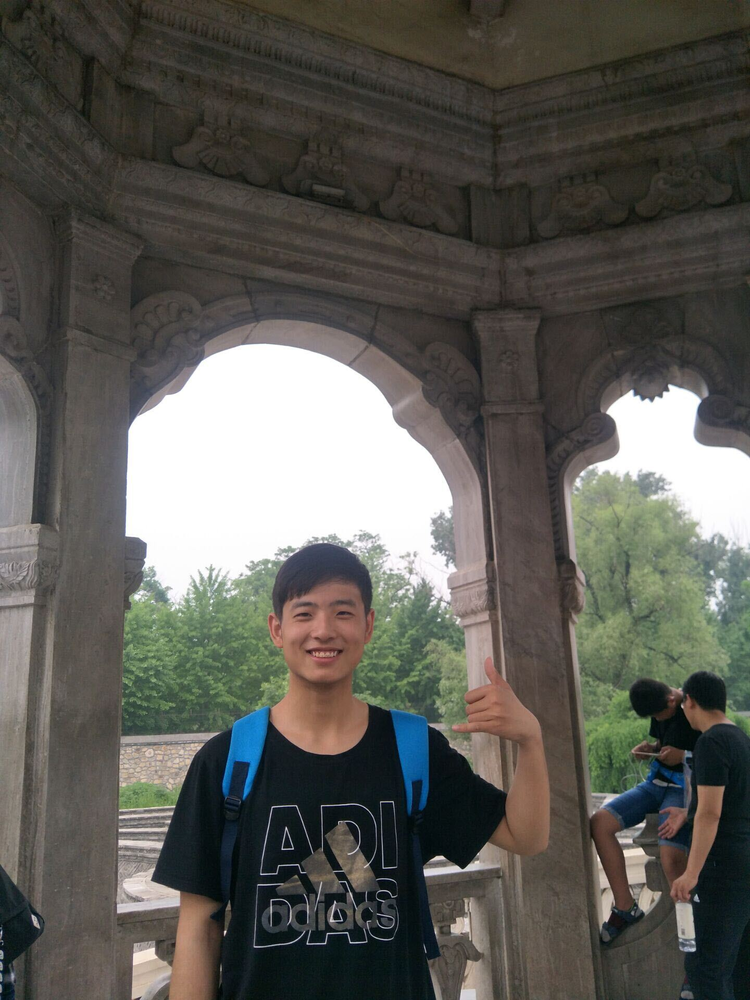

Artificial intelligence (AI) has become an increasingly important component of modern scientific research, providing new approaches to analysing complex and large-scale scientific data, modelling complex systems, and accelerating discovery. Recent advances in machine learning, foundation models, and generative models have further expanded the potential of AI across scientific domains, including health and life sciences, environmental and geospatial sciences, and computational sciences.
However, translating these advances into scientific discovery requires methods that address the heterogeneity, complexity, and domain-specific characteristics of scientific data while producing robust, interpretable, and scientifically meaningful results. Scientific data are frequently limited, noisy, or expensive to obtain; multimodal and spatiotemporal; governed by complex and partially known underlying mechanisms; and subject to requirements for robustness, interpretability, and scientific validity that go well beyond predictive accuracy.
This half-day workshop focuses on AI and data-driven approaches to scientific discovery. It brings together researchers from diverse scientific disciplines around three connected themes, and provides a forum for both methodological advances and real-world applications, facilitating discussion of the opportunities and challenges in developing AI systems that meaningfully advance scientific research.
The scope is defined by the nature of the scientific problem and data rather than by any particular AI technique, and is organised around three connected themes.
Methods addressing noise and measurement error; missing, sparse, or irregularly sampled observations; limited or imbalanced samples; heterogeneity across sources, instruments, sites, or populations; uncertainty quantification; distribution shift; and spatial, temporal, and longitudinal dependencies.
Large language models, generative and multimodal models, and AI agents applied to heterogeneous scientific data — text, images, signals, sensor measurements, and spatial, temporal, and longitudinal records — supporting scientific reasoning, knowledge extraction, hypothesis generation, and experimental design.
Methods and evaluation frameworks addressing interpretability, uncertainty, robustness, reproducibility, generalisability, and scientific validity, together with approaches for validating AI outputs against domain knowledge and turning them into hypotheses, mechanisms, or decisions scientists can act on.
The scope is intentionally interdisciplinary. We welcome work across scientific domains, including but not limited to:
We invite submissions on AI and data-driven methods for scientific analysis and discovery across the three workshop themes and all application domains listed above. Contributions are not required to introduce an entirely new AI algorithm — we equally welcome:
Work is in scope when it engages seriously with a scientific question and with the properties of scientific data. General-purpose AI methods evaluated only on standard benchmarks, and applications that use scientific data purely as a test case without scientific interpretation or validation, fall outside the scope of the workshop.
Full papers up to 9 pages and short papers up to 4 pages, excluding references, following the AJCAI 2026 formatting guidelines. All papers will be peer-reviewed by at least two program committee members. Accepted papers will be presented as oral or poster presentations.
Relevant papers accepted within the previous year at major AI and machine learning venues (e.g. ICLR, ICML, NeurIPS, AAAI, IJCAI, and related conferences). These works will not undergo a separate archival publication process, providing an opportunity to bring high-quality, timely research into the workshop discussion.
| Milestone | Date |
|---|---|
| Paper submission deadline | 2 November 2026 |
| Notification of acceptance | 9 November 2026 |
| Camera-ready deadline | 16 November 2026 |
| Presentation-only contribution deadline | 9 November 2026 |
| Workshop day | 27 November 2026 |
All deadlines are 23:59 Anywhere on Earth (AoE).
The workshop program features an invited keynote by Ting Dang (see Keynote Speaker), an invited interdisciplinary talk (domain-science perspective), and a panel on “From AI Predictions to Scientific Discovery.” Contributed sessions also reserve slots for student and early-career presenters.
We welcome nominations and self-nominations for the invited interdisciplinary talk and panel participation from both AI-methods researchers and domain scientists whose work connects to the workshop themes — including scientific machine learning, foundation and multimodal models for science, and the interpretation, validation, and translation of AI outputs in domains such as health and biomedicine, environmental and geospatial science, and the physical and life sciences.
Half-day program combining invited talks, contributed presentations, and a panel. Each session maps onto the three workshop themes.
| Time | Session |
|---|---|
| 09:00 – 09:10 | Welcome and workshop introduction |
| 09:10 – 09:50 | Keynote: Ting Dang, University of Melbourne (Themes 1–2) |
| 09:50 – 10:30 | Contributed session 1: methods for scientific data and modelling |
| 10:30 – 10:45 | Coffee break |
| 10:45 – 11:20 | Invited interdisciplinary talk: a domain-science perspective (Theme 3) |
| 11:20 – 11:50 | Contributed session 2: generative and multimodal AI for science; emerging directions |
| 11:50 – 12:20 | Panel: From AI Predictions to Scientific Discovery |
| 12:20 – 12:30 | Open discussion and closing remarks |

For questions about submissions, speaking, or the workshop program, please contact the organizing committee:
Main conference: AJCAI 2026, Auckland, New Zealand.